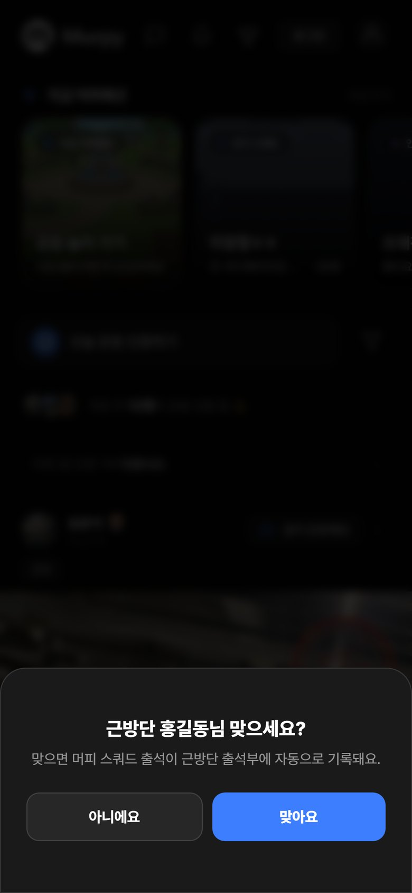
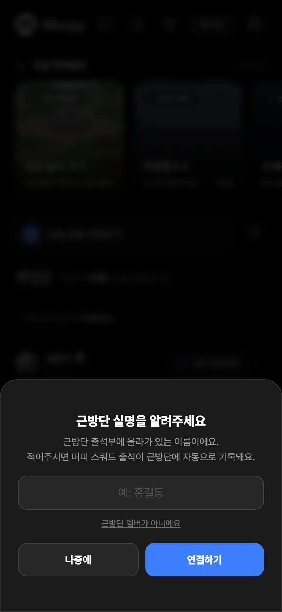

근방단 출석 연동 안내
문구 복사 → 카톡방에 붙여넣기, 사진 두 장은 길게 눌러 저장해서 같이 올리세요.
[근방단 × 머피 출석 연동 안내] 이제 머피에서 스쿼드 참석·출석·입금을 하면 근방단 출석부에 자동으로 들어갑니다. 운영진이 따로 옮겨 적지 않아요! 그러려면 머피 계정이 근방단 명단과 연결돼 있어야 해요. 대부분은 자동으로 연결해 두었고, 확인이 필요한 분은 머피 앱을 켜면 아래 창이 한 번 떠요. 1) "근방단 ○○○님 맞으세요?" → 본인이면 [맞아요] 2) "근방단 실명을 알려주세요" → 근방단 출석부에 있는 실명을 띄어쓰기 없이 적고 [연결하기] 근방단 멤버가 아니면 '근방단 멤버가 아니에요'를 눌러 주세요. 창이 안 뜨면 이미 연결된 거니 그냥 쓰시면 됩니다. "명단에서 찾지 못했어요"가 뜨면 운영진에게 말씀해 주세요.


사진 속 '홍길동'은 예시예요. 실제로는 본인 이름이 나와요.